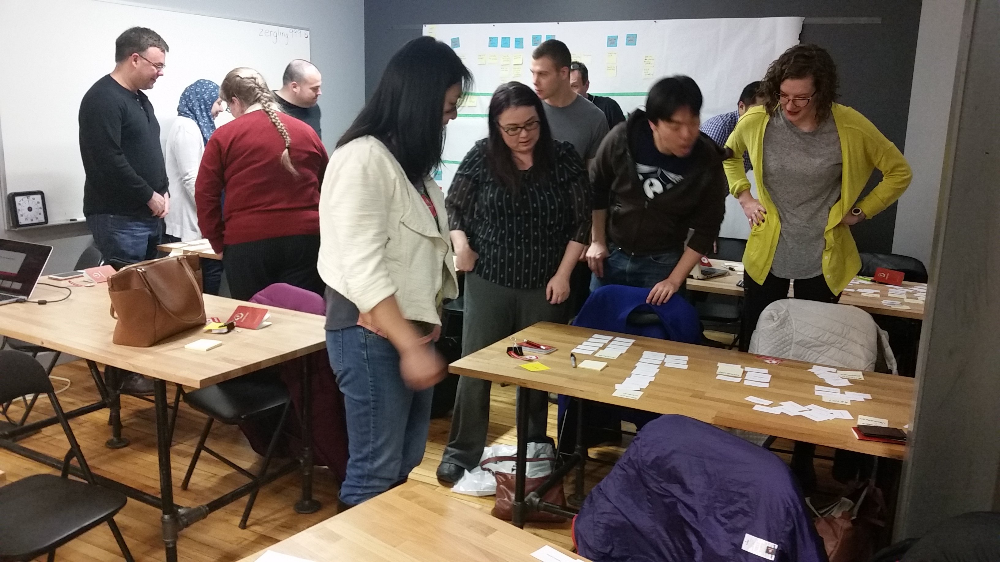

Boltmade Card Sorting Workshop
Boltmade | January 2016 - April 2016
Summary
I designed and led a public workshop on card sorting as a UX research tool for Boltmade as a side project during my internship there. You can read the blogpost I wrote on card sorting and the workshop here.
Who is Boltmade?
Boltmade is a highly-collaborative design and development consulting agency that works with various clients to design and build out software, typically for mobile and web platforms. A recent client project involved the design and development of a new feature for an app that has over 200 million users worldwide.
Project Background
Boltmade hosts free monthly workshops for the local community on various design and development topics called "Boltmade Sessions," in order to give back knowledge to the community and help build community and expertise in the Kitchener-Waterloo area. When I started my internship with Boltmade, it had been a while since a Boltmade Session had been held. And so, I happily volunteered to do a workshop on card sorting as a side project. I really liked how effective the tool was in UX research, and I had recently used it as part of the design process for a client project I was working on at Boltmade (which I cannot include on this website yet since it has not been released).
Design Process
The workshop was targeting people from the Kitchener-Waterloo region with all levels of expertise, including ones that have little to no user experience knowledge or expertise, much less knowledge in card sorting. As such, I wanted to create an experience that let them know what card sorting was and convince them that it's a tool that they should definitely use when a situation calls for it.
I first structured the workshop mainly centered around a card sorting activity that the participants would do. I knew for sure that I wanted for the activity to be done in small groups, as reccommended by Donna Spencer in her book Card Sorting: Designing Usable Categories. It would help people in the workshop who hadn't done it before feel comfortable doing it together with others, and it would also spark rich discussion during the sort, which is valuable to the actual UX research. wasn't sure at first what exactly the participants should sort.
My main goal was to show the power of card sorting, and part of that was showing how between multiple sorts, there can be both strong agreements and disagreements on where a card is grouped. As such, I needed to make cards with content that had some agreement, but also a lot of freedom for people to interpret it differently. I also wanted to use a domain that was familiar so people wouldn't be thrown off by technical terms or jargon. Originally, I wanted to do foods, with the context being sorting them for a supermarket. However, supermarkets already have extremely well-defined groupings that everyone is familiar with, so we wouldn't get interesting results. I ended up with doing a museum exhibit sort - the cards would each have the name of an exhibit, and participants would sort them into groups that just made sense. I liked this because it gave a wide range of cards I could use, but also had a context of something that people were somewhat familiar with, but not too much that all the sorts would be agreeable.
Test Run

I ran the initial iteration of my card sort workshop as Boltmade's weekly lunch-and-learn, as captured by some the photos above. I started out with a brief spiel about card sorting, and dove right into the activity. I had people in groups of 3-4 sort about 40 cards with museum exhibit names on them. People seemed to really enjoy going through all the cards and sorting them as they please, and also discussing (sometimes very passionately!) about how to sort some of the cards. At the end of the activity, I wanted to make them observe the differences and similarities between the sorts, and also try to "test" out the sorts. And so, I had some people from each group go around to each of the other sorts, and attempt to "guess" where some of the cards would be based on the category names given.
Changes
I received some great feedback from the Boltmade lunch-and-learn. I also thought more about the structure of the workshop and give it more value - I added a second activity that explored a different type of sort - one that was done individually, and using an online tool to explore the advantages and use case for that kind of sort. For that sort, I wanted to make sure I used an interesting topic to engage the workshop participants. I also wanted to use an existing site with content to let paritcipants see the similarities and differences between the actual website structure and the result of their sorts. As such, I chose a government website, but one about Banff National Park, so participants would still be engaged with a somewhat interesting topic. I also added in the component of analysis of the card sort results and how the paritcipants can use it as information to create the actual navigation structure of a product.
Workshop
We had about 15 participants show up to the workshop, and everyone had a great time. We also got some really positive feedback from our participants. More details can be found in the full-write up I wrote on the Boltmade blog.